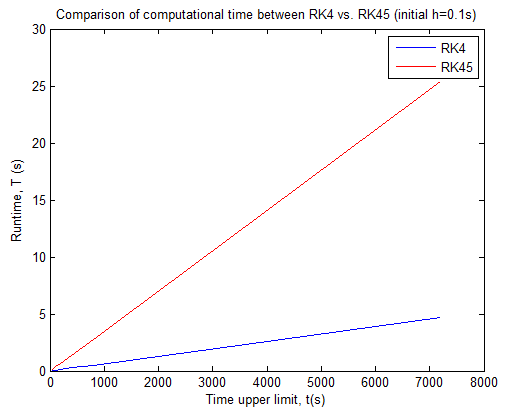

Welcome To My Website!
Hello! My name is Ethan and I am an
Welcome To My Website!

Featured Work
Latest News
| Intro | Website Update | Photography Update |
|
I am an amateur photographer and software developer. 95% of all the pictures you will see were taken by me. I also take pride in coding this website from scratch and validating its standard with W3C. You have my every permission to use any content you see fit. Words of Wisdom: It is important to be happy so please give your friends your smile when they are not wearing one, just like me to the statue... |
This is my most recent layout design. I added a fixed background, a photography and blog panel, transition effect, and new dynamic features. A new page for Coding has been created! In here I showcase a number of my programming projects that I worked on. Please note that I purposely configurate a few fixed settings, so to maximize the user experience, please go full-screen by hitting F11 |
Photography page no longer exists. Instead, I created a panel to opt three different albums for ease of navigation. The presentation of galleries is a lot more organized and sliders are compressed into one page. Photos from Southeast Asia trip (Thailand, Cambodia, Malaysia) in 2018 are posted under the Travel Album. |
Did you know that in Singapore, you are guilty until proven innocent? Or that some beer are cheaper than water in Germany? What about the fact that there are more sheep than people in New Zealand? Isn't it interesting that base on the Italian nationality law, jus sanguinis, you have an Italian citizenship if one or both of your parents are citizens of the nation regardless of your place of birth? In America, the thumb up is a congratulatory expression but in the Arab world it is considered offensive (essentially, the middle finger). Want to know more on my travels? Just click on the flags below to read about my adventure!
At the Rooftop of the World Sept 2017
You know the feeling of a hangover after a long night of drinks? Yeah it's like that except it doesn't go away!! I was constantly tired, dizzy, lightheaded, and nauseous. I think my altitude sickness at some point caused my attitude sickness. To order to enter Tibet you have to have a special permit alongside with your Chinese visa.

One Megacity June 2013
The next day, with our Toyota Yaris, we drove to Downtown Toronto to enjoy the hustling and bustling the city had to offer. Toronto earned the title of "Ethan's Best Architecture City" because of its super modern glass use in office and residential buildings. Last year one of my kids told me about Toronto and how beautiful its architecture was, but upon seeing it so myself I must concur with her. There's a famous market called "St's Lawrence" which has all sort of food including...

America, Land of Freedom and Opportunity June 2013
I have been to museums of torture, hospital, and space to name a few, but there was none compared to what I experienced next - the Museum of Sex! I actually paid $16 for a two-floor exhibition which was literally artistic interpretations of porn. I was quite discontent that I had to pay to watch porn. On the first floor, there was a dialectical presentation of sexual archievement on gender...
Visiting the Ghetto and Exploring Warsaw November 2011
The next day we were on a pirate ship to Gdynia and learned the history of Westerplatte, the site that WWII “officially” began with German attack on Polish military installations. The Germans opened fire first and killed 15 Polish soldiers but the Polish retaliated and killed around a hundred Nazis. The following day we went to the Malbork Castle...
The Magical Kingdom of Beer and Wurst October 2011
On my first day here, I went to a bunch of squares and the Deutsches Musuem, which is a museum of technology and science, the biggest of its kind in the world. This place surely lives up to its name, I was there for over 5 hours and did finish. Coming here was like any nerd’s dream and made me feel really proud to be an engineer...
Learning the city of Art and Music October 2011
In Vienna, I went to a residential house called “Hunderwasserhaus” which literally means hundred water house. Hunderwasser is the name of the famous architect whose philosophy opposed straight lines and simple color in modern architecture. It sounds weird to go to a house in a foreign country but Hunderwasserhaus is actually one of the main attractions in Vienna...
Exploring the Bohemian Empire October 2011
Prague in general is a very touristy, so taking a good picture is difficult. I often time had to smell people’s armpit in the subway because it was simply too crowded. I also went to the Dancing House, a famous architecture in league of the Sydney Opera House and other famous buildings. As a structural engineer, I LOVED this building...
Delicious Food, Awesome Technology, Wealthy Nation, It's Singapore! September 2010
I thought my life was complete after seeing the Sydney Opera House--then came the Esplanade in Singapore. The Esplanade is the Singaporean version of the Sydney Opera House, and this performing arts venue looks like a durian, an exotic fruit from Southeast Asia. The Youth Olympics also took place when I was in Singapore...
Bridge and House of the Engineer August 2010
Henry Miller once said that “one’s destination is never a place, but a new way of seeing things.” I, too, agree with this, in the sense that traveling and being exposed to other cultures opens your eyes to a whole new dimension. There is so much that the world has to offer and it's really up to us to...
One Big Chinatown Summer 2010
My hostel was in Tsim Sha Tsui along Nathan Road, a really long street popular for shopping and food. It rained a lot on my first three days and there was a typhoon warning, but overall the weather was really nice. My stay at the Chungking hostel was an experience because I totally...
Fusion of European and Asian Influence Summer 2010
The main attraction (and most famous landmark) in Macau, besides all the casinos, is the San Paulo Cathedral (enlisted as part of the UNESCO World Heritage Site Historic Centre). In the late 16th century, the cathedral was one of the largest Catholic churches in Asia. However, in early 19th century, a fire burned literally the whole church...
Internship and Adventure in New Zealand! July 2010
On the night of June 20, 2010 I knew my life wasn't going to be the same for a few months. I knew that something tickled my twinkle and I couldn’t rest. The following day, I embarked on a brand-new journey to find myself lost in a beautiful country, New Zealand, and furthermore a sight-seeing city, Auckland. When I went through customs...
Journey to Rome with Me! Summer 2008
When I was a freshman in college, I had an opportunity to study abroad in Rome, Italy. Spending five weeks in Rome that summer was one of the smartest things I ever did in my young life. I met 15 exceptional and friendly students who all had the urge to learn with a keen sense of curiosity...
C
O
D
I
N
G
According to Wikipedia, computer vision is an interdisciplinary field that deals with how computers can be made for gaining high-level understanding from digital images or videos. Computer vision tasks include methods for acquiring, processing, analyzing and understanding digital images, and extraction of high-dimensional data from the real world in order to produce numerical or symbolic information. It involves the development of a theoretical and algorithmic basis to achieve automatic visual understanding. As a scientific discipline, computer vision is concerned with the theory behind artificial systems that extract information from images. The image data can take many forms, such as video sequences, views from multiple cameras. In my graduate studies at Carnegie Mellon University, I took a course in computer vision, which is my favorite course of all time as well as the most difficult! These are projects I completed that will encapsulate the basic idea of this powerful computer science concept. Please note that I cannot provide my source code because these assignments may be reused in the course.
The first groundbreaking work on template tracking was the Lucas-Kanade tracker. It basically assumes that the template undergoes constant motion in a small region. The Lucas-Kanade Tracker works on two frames at a time, and does not assume any statistical motion model throughout the sequence. The algorithm estimates the deformations between two image frames under the assumption that the intensity of the objects has not changed significantly betweenthe two frames. Starting with a rectangle $R_t$ on frame $I_t$, the Lucas-Kanade Tracker aims to move it by an offset (u; v) to obtain another rectangle $R_{t+1}$ on frame $I_{t+1}$, so that the pixel squared difference in the two rectangles is minimized. According to Wikipedia, $A^TA$ is the structure tensor of the image at all points in the rectangle. It's a gradient matrix that summarizes the principal directions in a specified neighborhood of that point.
$$A=\left[ \begin{array}{cc} I_x(q_1) & I_x(q_1) \\ I_x(q_2) & I_x(q_2) \\ \vdots & \vdots \\ I_x(q_n) & I_x(q_n) \\ \end{array} \right] \rightarrow A^TA = \left[ \begin{array}{cc} \sum I_x^2 & \sum I_xI_y \\ \sum I_xI_y & \sum I_y^2 \\ \end{array} \right] $$
As for the conditions, $A^TA$ should be invertible, well-conditioned and should not be too small due to noise (meaning the eigenvalues should not be too small). Below is a tracking example of a car with little variations. This is totally awesome because I always see bank robberies and car pursuit on T.V sky cams and now I got to learn the technology and science behind it!
The above video is quite simple but real data is often corrupted by unknown image noise or under varying illumination conditions. One way to address issue of appearance variation is to use the principal component analysis.
$$I_{t+1}=I_t+\sum_{c=1}^k w_cB_c$$ The idea to optimize $w$ is to find the minimum residual of the squared difference in the two rectangles. Suppose the residual is $I_{t+1}(x+u,y+v)-I_t(x,y)$, it guarantees an optimized $w$ from above equation provided that the residual is within an acceptable tolerance. $$I_{t+1}(x+u,y+v)-I_t(x,y)=\sum_{c=1}^k w_cB_c \rightarrow r= \left[ \begin{array}{cccc} b_1 \; b_2 \cdots b_k \end{array} \right] \left[ \begin{array}{c} w_1 \\ w_2 \\ \vdots \\ w_k \end{array} \right] =bw \rightarrow w=b^{-1}r $$As you can see, this example isn't so perfect because of the variation in appearance such as shading and lighting. Can you think of a way to make it "easier" for computers to track these objects? How about reducing the color channels by converting the frames to grayscale? Or use various empirical affine motion equations to form a linear combination of bases.

The question of interest for this topic is "Given an image, can a computer program determine where it was taken?" I used the Bag-of-Words (BoW) approach. The BoW essentially trains the computer to reprense the world with visual words. The idea is to give the computer many(!) data (images) to understand and recognize so that it is "smart" enough to identify the next datum. This is where data science like Machine Learning and Data Mining come to play to supervise the dataset. To help the computer interpret the data, we filter the images and extract their properties. A filter bank is a series of flters that captures different visual properties. The Gaussian blurs are to smooth out the details by reducing noise. For example, convolving with the Laplacian Gaussian kernel allows easier detection of edges. Furthermore, the derivative of the Gaussian on the x-direction detects a change in intensity along that axis, thus vertical edges are more prominent. The same can be said for gradient of the Gaussian in respect to the y-axis which shows details on the horizontal edges. Bag of words is simple and efficient, but it discards information about the spatial structure of the image and this information is often valuable. One way to alleviate this issue is to use spatial pyramid matching. The general idea is to divide the image into a small number of cells, and concatenate the histogram of each of these cells to the histogram of the original image, with a suitable weight. The following outlines the basic idea of the algorithm.
Interest point detectors find particularly salient points in an image upon which we can extract a feature descriptor. In our case, we will be using BRIEF. Once we have extracted the interest points, we can use descriptors to match them between images to do neat things like panorama stitching or scene reconstruction. Keypoints are found by using the Difference of Gaussian (DoG) detector. This detector finds points that are extrema in both scale and space of a DoG pyramid. The objective of this assignment was to learn a tomato soup can and be able to recognize and match it from various angles. We accomplish this by identifying points of interest and match them with a descriptor. One simple descriptor is BRIEF which uses the Hamming distance to compute the similarity between the potential matches. The belowed image on the left shows the ideals points of critical contrast that I needed to match and my results on the right image.

Unfortunately, my algorithm does not yield any correct matches. The closest and best result I obtained was the top left. Of course, if the test image compares to itself, the percentage of correct matches would be 100%, however I believe once rotated, the derivative of Gaussian is more difficult in terms of computing the gradient at the edges. In other words, the eigenvalues is distorted due to the change of orientation.
Robots often deal with planes, whether in the form of walls, ground, or some other at surface. When two cameras observe a plane, there exists a relationship between the images captured. This relationship is defined by a 3x3 transformation matrix, called a planar homography. This was definitely one of my more favorite topics to learn in Computer Vision because it is highly practical. Let's suppose a robot is at war, it needs to be able to "stitch" the planar images that it "sees" to interpret it as a warzone and take action. A planar homopgrahy allows us to compute how a planar scene would look from a second camera location give only the first image! Furthermore, we can extrapolate any camera angle from any location without knowing any internal camera parameters. Can you quess what simple use of homography? Panoramas! For this assignment, I was given two images of the Taj Mahal and I had to use homographies to create a panorama image of the same scene.
 Suppose $p \propto Hq$ where $p=[x',y',z']^T$ and $q=[x,y,z]^T$ for $p,q$ respectively, then $$ \left \{ \begin{array}{c} x'\\y'\\z' \end{array} \right\} \sim \left[ \begin{array}{ccc} h_{11} & h_{12} & h_{13} \\ h_{21} & h_{22} & h_{23} \\ h_{31} & h_{32} & h_{33} \end{array} \right] \left \{ \begin{array}{c} x\\y\\z \end{array} \right\} \rightarrow \left \{ \begin{array}{c} x'=\frac{h_{11}x+h_{12}y+h_{13}}{h_{31}x+h_{32}y+h_{33}}\\\\y'=\frac{h_{21}x+h_{22}y+h_{23}}{h_{31}x+h_{32}y+h_{33}} \end{array} \right. $$\\ If we multiply both sides by the denominator and arrange, we get $$ \left \{ \begin{array}{c} x'=h_{11}x+h_{12}y+h_{13}-h_{31}xx'-h_{32}yx'-x' \\ y'=h_{21}x+h_{22}y+h_{23}-h_{31}xy'-h_{32}yy'-y' \end{array} \right. $$ To minimize the homogenous linear least squares system we seek $arg \; min ||Ah|| = arg \; min \;h^TA^TAh = \lambda_{min}$ If we decompose A using SVD method, the planar homography is precisely the last column of D corresponding to the smallest eigenvalue. Furthermore, if the eigenvalues are zero, h is exactly determined and fits all the points perfect. If the values are positive, the system is overdetermined and a residual will exist.
Suppose $p \propto Hq$ where $p=[x',y',z']^T$ and $q=[x,y,z]^T$ for $p,q$ respectively, then $$ \left \{ \begin{array}{c} x'\\y'\\z' \end{array} \right\} \sim \left[ \begin{array}{ccc} h_{11} & h_{12} & h_{13} \\ h_{21} & h_{22} & h_{23} \\ h_{31} & h_{32} & h_{33} \end{array} \right] \left \{ \begin{array}{c} x\\y\\z \end{array} \right\} \rightarrow \left \{ \begin{array}{c} x'=\frac{h_{11}x+h_{12}y+h_{13}}{h_{31}x+h_{32}y+h_{33}}\\\\y'=\frac{h_{21}x+h_{22}y+h_{23}}{h_{31}x+h_{32}y+h_{33}} \end{array} \right. $$\\ If we multiply both sides by the denominator and arrange, we get $$ \left \{ \begin{array}{c} x'=h_{11}x+h_{12}y+h_{13}-h_{31}xx'-h_{32}yx'-x' \\ y'=h_{21}x+h_{22}y+h_{23}-h_{31}xy'-h_{32}yy'-y' \end{array} \right. $$ To minimize the homogenous linear least squares system we seek $arg \; min ||Ah|| = arg \; min \;h^TA^TAh = \lambda_{min}$ If we decompose A using SVD method, the planar homography is precisely the last column of D corresponding to the smallest eigenvalue. Furthermore, if the eigenvalues are zero, h is exactly determined and fits all the points perfect. If the values are positive, the system is overdetermined and a residual will exist.


I designed and built a simple software package/interface for finite element analysis. The main idea of this project was to provide students access to analytical studies of the finite element method. Students should be able to obtain a basic understanding of the importance of FEM and how it works at the elementary level. Note that some calculus (including linear algebra and differential equations) is required to understand the mathematics.
 Click on the icon to download the graphical user interface.
Click on the icon to download the graphical user interface.
 Click on the icon to download the lesson PDF.
Click on the icon to download the lesson PDF.


We first note the symmetry of the membrane and simplify the model by considering only the first quadrant. Equation of Ellipse is $$(\frac{x}{a})^2+(\frac{y}{b})^2=1$$ We segment each of the quadrant into two individual meshes: Biquadratic Quadralateral and Bilinear Triangle
Rectangular Element: $Nodes [1 \;2 \;3 \;5 \;6 \;7 \;8 \;9 \;0]$
Triangular Element: $Nodes [3 \;4 \;12 \;11 \;10 \;7]$
| n | $\mathbf{L_{n+1}}$ |
| 2 | $L_2(t)=\frac{3tL_1(t)-L_0(t)}{2}= \frac{3t^2-1}{2}$ |
| 3 | $L_3(t)=\frac{5tL_1(t)-2L_1(t)}{3}= \frac{5t^3-3t}{2}$ |
| 4 | $L_4(t)=\frac{7tL_1(t)-3L_2(t)}{4}= \frac{35t^4}{8}-\frac{15t^2}{4}+\frac{3}{8}$ |
| 5 | $L_5(t)=\frac{63t^5}{8}-\frac{35t^3}{4}+\frac{15t}{8}$ |
| 6 | $L_6(t)=\frac{231t^6}{16}-\frac{315t^4}{16}+\frac{105t^2}{16}-\frac{5}{16}$ |
| 7 | $L_7(t)=\frac{429t^7}{16}-\frac{693t^5}{16}+\frac{315t^3}{16}-\frac{35t}{16}$ |


| $\frac{\partial \phi_i}{\partial x}=\frac{\beta_i}{2A_e}$ | $\frac{\partial \phi_j}{\partial x}=\frac{\beta_j}{2A_e}$ | $\frac{\partial \phi_i}{\partial x}=\frac{\gamma_i}{2A_e}$ | $\frac{\partial \phi_j}{\partial x}=\frac{\gamma_j}{2A_e}$ |
 \begin{eqnarray} N_1(\xi)=\frac{1}{4}(1-\xi)^2(2+\xi)\\ N_2(\xi)=\frac{h}{8}(1-\xi)^2(1+\xi)\\ N_3(\xi)=\frac{1}{4}(1+\xi)^2(2+\xi)\\ N_4(\xi)=\frac{h}{8}(1+\xi)^2(\xi-1)\\ \end{eqnarray} Local Stiffness Matrix $$K_{ij}=\int_eEI\frac{d^2N_i(x)}{dx^2} \frac{d^2N_j(x)}{dx^2}dx=\int_{-1}^1 EI\frac{d^2N_i(x)}{dx^2} \frac{d^2N_j(x)}{dx^2}\frac{1}{2}h d\xi$$ For a generic case with both free nodes, the matrix becomes \[ K^e = \frac{EI}{h^3}\left[ \begin{array}{cccc} 12 & 6h & -12 & 6h \\ 6h & 4h^2 & -6h & 2h^2 \\ -12 & -6h & 12 & -6h \\ 6h & 2h^2 & -6h & 4h^2 \end{array} \right]\] Local Force Vector $$f_i^{(e)}=\int_e q(x)N_i(x)dx=\int_{-1}^1 q(x)N_i(x)\frac{1}{2}h d\xi$$ For uniform load $q_0$ $$f^{(e)}=\frac{q_0h_e}{12} \left\{ \begin{array}{c} 6\\ h_e \\ 6 \\ -h_e \end{array} \right\} $$ System array is defined with dimensions $n\;x\;m$ where $n$ is 4 (the number of degree of freedom per element) and $m$ is 3 (the number of elements).
\begin{eqnarray} N_1(\xi)=\frac{1}{4}(1-\xi)^2(2+\xi)\\ N_2(\xi)=\frac{h}{8}(1-\xi)^2(1+\xi)\\ N_3(\xi)=\frac{1}{4}(1+\xi)^2(2+\xi)\\ N_4(\xi)=\frac{h}{8}(1+\xi)^2(\xi-1)\\ \end{eqnarray} Local Stiffness Matrix $$K_{ij}=\int_eEI\frac{d^2N_i(x)}{dx^2} \frac{d^2N_j(x)}{dx^2}dx=\int_{-1}^1 EI\frac{d^2N_i(x)}{dx^2} \frac{d^2N_j(x)}{dx^2}\frac{1}{2}h d\xi$$ For a generic case with both free nodes, the matrix becomes \[ K^e = \frac{EI}{h^3}\left[ \begin{array}{cccc} 12 & 6h & -12 & 6h \\ 6h & 4h^2 & -6h & 2h^2 \\ -12 & -6h & 12 & -6h \\ 6h & 2h^2 & -6h & 4h^2 \end{array} \right]\] Local Force Vector $$f_i^{(e)}=\int_e q(x)N_i(x)dx=\int_{-1}^1 q(x)N_i(x)\frac{1}{2}h d\xi$$ For uniform load $q_0$ $$f^{(e)}=\frac{q_0h_e}{12} \left\{ \begin{array}{c} 6\\ h_e \\ 6 \\ -h_e \end{array} \right\} $$ System array is defined with dimensions $n\;x\;m$ where $n$ is 4 (the number of degree of freedom per element) and $m$ is 3 (the number of elements).
Windows Presentation Foundation (or WPF) is a graphical subsystem by Microsoft for rendering user interfaces in Windows-based applications. In my coding career I worked with this technology. This page provides a mini project that has a few comprehensive examples of what WPF is capable of. The last topic of this page talks about Model-View-ViewModel (MMVV), which is a software architectural patttern that decouples the user interface with the business logic. This page is not meant to be a tutorial but simply a refresher to those that have experiences with WPF and MVVM.
Click on the icon to download the Visual Studio solution of this demo project
This project demostrates a few WPF features through a series of examples. The first example is on animation. Here I have two images, one is a normal picture of me and the another one is not so skinny picture of me. These two images are overlapped with each other using the Canvas tag. In WPF, every control can only have one child, thus containers like StackPanel, WrapPanel, and DockPanel are used to lay out the interface, howevever they are "stacked" relative to each other except for the canvas and grid containers. Only Grid and Canvas allow for overlapping. Here we use a trigger with a loaded event to begin an animation that changes the opacity of a target with the name "pic" (which in this case is the not skinny picture) from fully visible to invisible within two seconds. The "RepeatBehavior" is set to forever which means the animation loops infinitely. Furthermore, we have two more routed events for mouse in and out which pauses and resumes the storyboard, respectively.
<Canvas>
<Canvas.Triggers>
<EventTrigger RoutedEvent="Canvas.Loaded">
<BeginStoryboard x:Name="OpacityStoryboard">
<Storyboard TargetName="pic2" TargetProperty="Opacity">
<DoubleAnimation From="1" To="0" Duration="0:0:2" AutoReverse="True" RepeatBehavior="Forever" />
</Storyboard>
</BeginStoryboard>
</EventTrigger>
<EventTrigger RoutedEvent="UIElement.MouseEnter">
<PauseStoryboard BeginStoryboardName="OpacityStoryboard" />
</EventTrigger>
<EventTrigger RoutedEvent="UIElement.MouseLeave">
<ResumeStoryboard BeginStoryboardName="OpacityStoryboard" />
</EventTrigger>
</Canvas.Triggers>
<Image x:Name="pic1" Source="Images/Skinny.jpg" />
<Image x:Name="pic2" Source="Images/NotSkinny.jpg" />
</Canvas>
In this demo, we observe some pretty amazing WPF styling. The first style targets the whole Window. It has a trigger that listens to the binding of the property "IsChecked" of the element by the name of "redColorCheckBox." If this value is true, then it sets the background to red. But what background? The background of the specific type, which in this case is the window. The second block of code is inside the Window.Resources which means any styling or defines in this block is applied to the whole window. The first style in here applies to every button, hence in the video clip on the left you see that the three buttons all look the same (height of 30px, height of 80px, font size of 12px, etc). Furthermore, once again we have a trigger and this one is "IsMouseOver", meaning whenever the mouse is over the control (button), the foreground turns red. Styles in WPF do not have to be defined under Resources, it can be defined straight within the scope of the individual control. If you look at the second textbox, you will see that I am manipulating the "Background" and "IsEnabled" properties. The background is binded to whatever value I type in the textbox. This is done through RelativeSource to myself and taking the text property. Similarly, I have a data trigger that compares to my typed text, if it is equal to the string "disabled" then it will set the "IsEnabled" property to false. As you can see, the possibilities of WPF styling is endless. The complete code snippet is below.
<Window.Style>
<Style TargetType="{x:Type Window}">
<Style.Triggers>
<DataTrigger Binding="{Binding ElementName=redColorCheckBox, Path=IsChecked}" Value="True">
<Setter Property="Background" Value="Red" />
</DataTrigger>
</Style.Triggers>
</Style>
</Window.Style>
<Window.Resources>
<Style TargetType = "{x:Type Button}">
<Setter Property = "Height" Value = "30" />
<Setter Property = "Width" Value = "80" />
<Setter Property = "Foreground" Value = "Blue" />
<Setter Property = "FontSize" Value = "12" />
<Setter Property = "Margin" Value = "10" />
<Style.Triggers>
<Trigger Property="IsMouseOver" Value="True">
<Setter Property="Foreground" Value="red" />
</Trigger>
</Style.Triggers>
</Style>
<Style x:Key="practiceStyle" TargetType="{x:Type TextBox}" >
<Style.Triggers>
<MultiTrigger>
<MultiTrigger.Conditions>
<Condition Property="IsMouseOver" Value="True" />
<Condition Property="IsKeyboardFocused" Value="True" />
</MultiTrigger.Conditions>
<MultiTrigger.Setters>
<Setter Property="Foreground" Value="red" />
<Setter Property="FontWeight" Value="Bold" />
<Setter Property="FontSize" Value="18" />
</MultiTrigger.Setters>
</MultiTrigger>
</Style.Triggers>
</Style>
<SolidColorBrush x:Key="staticBrush" Color="Yellow" />
</Window.Resources>
<StackPanel HorizontalAlignment="Center">
<Button Content = "Button1"/>
<Button Content = "Button2"/>
<Button Content = "Button3"/>
<TextBox Width="150" Background="{StaticResource staticBrush}" Style="{StaticResource practiceStyle}" />
<TextBox Width="100" Margin="10">
<TextBox.Style>
<Style TargetType="TextBox">
<Style.Triggers>
<DataTrigger Binding="{Binding RelativeSource={RelativeSource Self}, Path=Text}" Value="disabled">
<Setter Property="IsEnabled" Value="False" />
</DataTrigger>
</Style.Triggers>
<Setter Property="Background" Value="{Binding RelativeSource={RelativeSource Self}, Path=Text}" />
</Style>
</TextBox.Style>
</TextBox>
<CheckBox x:Name = "redColorCheckBox" Content = "Set red as foreground color" Margin = "10"/>
</StackPanel>
Data binding is what makes WPF so powerful. In this demo, we will see how to properly create a data template. The XAML is pretty straight forward, we have a listbox and a button. This button subscribes to a click event which we will discuss later. The listbox contains an ItemsSource that populates the collection as well as an Item Template. The StaticResource of this property points to a data template that "customizes" the appearance on how to display the data, which in this sense I assign it to have a grid inside a border and in this grid we get and set the name and age of a person. Note that the binding of "Name" and "Age" are actually properties of an instance of the datum (from the item source). As for the population of the items and the model itself, I handled them in the code behind. I have a class called Person that has name and age as attributes and publicly expose them so the data template can retrieve them. In the constructor I have a list of people and assign it to the item source of the listbox. Note that we can also use the .NET ObservableCollection which implements the INotifyCollectionChanged that works well with MVVM. When users change the name and age of each item, the properties automatically get updated because of the binding, and when they click on the button, there's a message box that shows the person's information.
<Window.Resources>
<DataTemplate x:Key ="template">
<Border x:Name="bord3r" BorderBrush="Red" BorderThickness="1">
<Grid>
<Grid.RowDefinitions>
<RowDefinition Height = "Auto" />
<RowDefinition Height = "Auto" />
</Grid.RowDefinitions>
<Grid.ColumnDefinitions>
<ColumnDefinition Width = "Auto" />
<ColumnDefinition Width = "200" />
</Grid.ColumnDefinitions>
<Label Margin = "10" Content="Name"/>
<TextBox Grid.Column = "1" Margin = "10" Text = "{Binding Name}" />
<Label Margin = "10" Grid.Row = "1" Content="Age"/>
<TextBox Grid.Column = "1" Grid.Row = "1" Margin = "10" Text = "{Binding Age}" />
</Grid>
</Border>
<DataTemplate.Triggers>
<DataTrigger Binding="{Binding Path=Name}" Value="Yvonne">
<Setter TargetName="bord3r" Property="BorderBrush" Value="blue" />
</DataTrigger>
</DataTemplate.Triggers>
</DataTemplate>
</Window.Resources>
<Grid>
<Grid.RowDefinitions>
<RowDefinition Height = "Auto" />
<RowDefinition Height = "*" />
</Grid.RowDefinitions>
<ListBox x:Name="listbox" ItemsSource = "{Binding Source}" ItemTemplate="{StaticResource template}" />
<Button Grid.Row = "1" Content = "_Show..." Click = "Button_Click" Width = "80" HorizontalAlignment = "Left" Margin = "10"/>
</Grid>
public partial class DataTemplateExample : Window
{
public DataTemplateExample()
{
InitializeComponent();
List people = new List();
people.Add(new Person { Name = "Ethan", Age = 27 });
people.Add(new Person { Name = "Yvonne", Age = 62 });
people.Add(new Person { Name = "Thomas", Age = 12 });
listbox.ItemsSource = people;
}
private void Button_Click(object sender, RoutedEventArgs e)
{
Person selectedPerson = (Person)listbox.SelectedValue;
if (selectedPerson != null)
{
string message = string.Format("{0} is {1} years old", selectedPerson.Name, selectedPerson.Age);
MessageBox.Show(message);
}
}
}
public class Person
{
private string _Name;
private double _Age;
public string Name
{
get { return _Name; }
set { _Name = value; }
}
public double Age
{
get { return _Age; }
set { _Age = value; }
}
}
Now this is a real treat. In 2016 there was a big PowerBall lottery of a half a billion jackpot. I was inspired by the event to write a simple app just for fun. This side project utilizes many WPF and .NET features ranging from storyboard animation to multi-threading. Click on the icon to download the Visual Studio solution of this Powerball project
This is an example of a very basic and classic MVVM pattern. The main idea of MVVM is that the Model should know nothing about the View and vice-versa. The Model is defined as any object that holds information. The View is the front end presentational layer. The "link" between the two is the ViewModel. The ViewModel should only know about the Model and not the View, and the View should only know about the ViewModel and not the Model.
This example is very simple, we have a listbox, data grid, and combo box that shares the same items source. There is a button that upon invoke will take a textbox string and adds to the collection. The core of MVVM lies in the implementation of the INotifyPropertyChanged interface. This interface allows any messages to be updated back to the View. Any property in the ViewModel that is bound to the View should implement this.
public class ViewModelBase: INotifyPropertyChanged
{
public event PropertyChangedEventHandler PropertyChanged;
protected virtual void OnPropertyChanged(string propertyName)
{
PropertyChangedEventHandler handler = PropertyChanged;
if (handler != null)
{
handler(this, new PropertyChangedEventArgs(propertyName));
}
}
}
The second main component is the implementation of the ICommand interface. This is to bind commands in the View such as button or any control event.
public class DelegateCommand : ICommand
{
private readonly Action _execute;
private readonly Func _canExecute;
public DelegateCommand(Action executeMethod)
: this(executeMethod, null)
{
}
public DelegateCommand(Action executeMethod, Func canExecuteMethod)
{
if (executeMethod == null)
throw new ArgumentNullException("executeMethod");
_execute = executeMethod;
_canExecute = canExecuteMethod;
}
public void Execute(object parameter)
{
_execute();
}
public bool CanExecute(object parameter)
{
return _canExecute == null ? true : _canExecute();
}
public event EventHandler CanExecuteChanged
{
add { CommandManager.RequerySuggested += value; }
remove { CommandManager.RequerySuggested -= value; }
}
}
The model can be anything, here I choose to create a blueprint of a person that has a first name, last name, and age.
public class Person : INotifyPropertyChanged
{
private string _FirstName;
private string _LastName;
private int _Age;
public string FirstName
{
get { return _FirstName; }
set
{
if (_FirstName != value)
{
_FirstName = value;
OnPropertyChanged("FirstName");
}
}
}
public string LastName
{
get { return _LastName;}
set
{
if (_LastName != value)
{
_LastName = value;
OnPropertyChanged("LastName");
}
}
}
public int Age
{
get { return _Age;}
set
{
if (_Age != value)
{
_Age = value;
OnPropertyChanged("Age");
}
}
}
public event PropertyChangedEventHandler PropertyChanged;
protected virtual void OnPropertyChanged(string propertyName)
{
PropertyChangedEventHandler handler = PropertyChanged;
if (handler != null)
{
handler(this, new PropertyChangedEventArgs(propertyName));
}
}
}
I daresay the ViewModel is the most complex part of the application. Afterall, it handles all the business logic and serves as the mediator between the Model and View. Here, we populate the collection in the constructor and listen to the change in selected person. Because the list box, data grid, and combo box all shared the same ObservableCollection and because we notify the same messages back to the view, all three get updated at the same time.
public class MainWindowViewModel : ViewModelBase
{
public DelegateCommand AddUserCommand { get; set; }
public ObservableCollection People { get; set; }
private Person _SelectedPerson;
private string _SelectedItemString;
public string TextProperty { get; set; }
public MainWindowViewModel()
{
AddUserCommand = new DelegateCommand(OnAddUserCommand);
People = new ObservableCollection
{
new Person { FirstName="Ethan", LastName="Uong", Age=32 },
new Person { FirstName="Yvonne", LastName="Liu", Age=26 },
new Person { FirstName="Happy", LastName="Doggy", Age=3 },
};
}
public Person SelectedPerson
{
get { return _SelectedPerson; }
set
{
if (_SelectedPerson != value && value != null)
{
_SelectedPerson = value;
SelectedItemString = value.FirstName;
OnPropertyChanged("SelectedPerson");
}
}
}
public string SelectedItemString
{
get { return _SelectedItemString; }
set
{
if (_SelectedItemString != value)
{
_SelectedItemString = value;
OnPropertyChanged("SelectedItemString");
}
}
}
private void OnAddUserCommand()
{
if (!string.IsNullOrEmpty(TextProperty))
{
People.Add(new Person {
FirstName = TextProperty.ToString(),
LastName = TextProperty.ToString(),
Age = DateTime.Now.Second
});
}
}
}
And finally we have the View. The last major concept is how exactlyl do we bind everything together? We have established that the View must know nothing about the Model, but how precisely does the View understand the ViewModel? This is done by setting the DataContext of the View to an instance of the ViewModel.
<Grid Margin="20">
<Grid.RowDefinitions>
<RowDefinition Height="Auto"/>
<RowDefinition Height="Auto"/>
</Grid.RowDefinitions>
<StackPanel Grid.Row="0">
<StackPanel Orientation="Horizontal">
<ListBox ItemsSource="{Binding People}" SelectedItem="{Binding SelectedPerson}"
DisplayMemberPath="FirstName" HorizontalAlignment="Left"/>
<DataGrid ItemsSource="{Binding People}" SelectedItem="{Binding SelectedPerson}" CanUserAddRows="False"
HorizontalAlignment="Left" Margin="5,0,0,0"/>
<ComboBox ItemsSource="{Binding People}" SelectedItem="{Binding SelectedPerson}"
DisplayMemberPath="FirstName" Margin="5,0,0,5" VerticalAlignment="Top"/>
</StackPanel>
<TextBlock FontWeight="Bold" Margin="5" Text="The selected person is ">
<Run Text="{Binding SelectedItemString}"/></TextBlock>
<Label Content="Type in a name and hit button to add to collection" />
</StackPanel>
<StackPanel Grid.Row="1" Width="150" HorizontalAlignment="Left">
<TextBox Text="{Binding TextProperty}" Margin="5"/>
<Button Content="Add person" Command="{Binding AddUserCommand}" Margin="5" />
</StackPanel>
</Grid>
Click on the icon to download the Visual Studio solution of this basic MVVM example
The study of Chaos Theory to analyze unprecedented events has been advancing since mid 20th century. Scientists and researchers find many applications from this field such as weather rediction and explanation of the rise and fall of stocks through the examination of the Lorenz attractor. This page seeks to have a better understanding of the chaotic behavior of the deterministic system by solving the system of ordinary differential equations using two numerical methods (Runge Kutta to the 4th order and the adaptive Runge Kutta. It is shown that the adaptive method yields significant better results and the analysis of the Lorenz attractor plays a vital role in understanding chaos theory. For my numerical method grad course, I designed a software package to understand the behavior of the Lorenz attractor on different parameters.
Chaos theory is a field of study in mathematics that concerns the behavior of dynamical systems with sensitive initial conditions. It is based on the notion that a small difference in initial conditions such as loss of significance and rounding errors can cause diverging outcomes to the system (deterministic or stochastic), thus rendering it predictable in the long term. Chaos, as summarized by Edward Lorenz, is "when the present determines the future, but the approximate present does not approximately determine the future [1]." Chaos theory deals with nonlinear systems that are impossible to predict or control such as turbulence, weather, brain states, and stock market. One main characteristic of this theory is its unpredictability. Because we can never know if the initial conditions are sufficient enough, the ultimate fate of the system cannot be determined. A slight error in measuring the state of the system can dramatically alter the result, and as such long-range weather prediction is not possible. Chaos exists in many natural phenomena such as weather and one approach to mathematically model its behavior is through the Lorenz attractor. The overall idea of chaos theory can be summarized by Poincar´e in 1903: "A very small cause which escapes our notice determines a considerable effect that we cannot fail to see...even if the case that the natural laws had no longer secret for us...we could only know the initial situation approximately...It may happen that small differences in initial conditions produce very great ones in the final phenomena."
The motivation in this study is that chaotic systems have been widely adopted in many areas of study such as chemical reaction, weather forecast, electrical circuit, stockmarket, human biology , message encryption, etc. The subsequent paragraphs in this motivation section is devoted to explaining an example of the application of chaotic systems in message encryption. One concept that one needs to grasp in order to understand how chaotic systems work in message encryption is that in the chaotic world it is impossible to build two chaotic systems to produce the same output. However, ”if two identical stable systems are driven by the same chaotic signal,” the outputs are two chaotic signals that are identical to each other. With this concept in mind, the message encryption process can be presented as the following [3].
Referring to the figure below, at the sending location chaotic signal x is generated and fed into a stable system F to produce the output as another chaotic signal y. Message encryption occurs when the message is mixed with the chaotic signal y and the result is the message-carrying signal y* that has a chaotic behaviour. Next step is to transmit two signals to the receiving location. One is the original chaotic signal x and the other is the message-carrying chaotic signal y*. At the sending location only chaotic signal x is fed into another stable system F which is identical to the stable system F at the sending location. Therefore, the output will be the chaotic signal y, which is the same output produced by the corresponding stable system F at the sending location. Finally, the original message can be recovered by subtracting chaotic signal y from the message-carrying chaotic signal y* at the receiving location. [3]

A Lorenz system is a system of ordinary differential equations with chaotic solutions for certain parameter values and initial conditions. When plotted, the system resembles a butterfly, hence chaos theory is often time called the Butterfly Effect. A simple analogy is the following: a flap of a butterfly in Mexico can cause a tornado in Texas. The notion is that a slight change in the current state could potentially cause a drastic change in the long-term effect, thus the validity of the starting points is highly sensitive.
\begin{eqnarray} \frac{dx}{dt}&=& \sigma (y-x)\\ \frac{dy}{dt}&=& x(\rho-z)-y\\ \frac{dz}{dt}&=& xy-\beta z \end{eqnarray}In Lorenz system, $x$, $y$, and $z$ are the system state, $t$ is time, $\sigma$, $\rho$, and $\beta$ are the system parameters. The constants $\rho$, $\beta$, and $\sigma$ determine the behavior of the system. Lorenz defines a deterministic sequence as one in which only one thing can happen next from an existing event. Furthermore, deterministic chaos is something that looks random, but is still deterministic. For the purpose of this page, we will use the canonical parameters $\rho=10$, $\beta=\frac{8}{3}$, and $\sigma=28$.
Any $n^{th}$ order linear ordinary differential equation can be expressed in the form of a system of first order linear ODEs. Numerical approximation is applied to ascertain values that may otherwise be impossible to solve through traditional methods. One popular family of numerical methods is the Runge Kutta which carries a better computational accuracy than the other methods [4]. Runge Kutta method consists of a number of numerical methods that can provide different levels of accuracy. Runge Kutta Fourth Order is one of the Runge Kutta methods and was introduced in the class. Therefore, the goal of this study is to introduce a new Runge Kutta method called Adaptive Runge Kutta method that is hypothetically capable of providing a better accuracy and efficiency than Runge Kutta Fourth Order method. The procedure in this study is to solve the Lorenz attractor by using both Adaptive Runge Kutta and RK4 methods and compare the results. The motivation for comparing the two methods is that the efficiency gained in adaptive RK can be hundred times or more compared to RK4 [5].
| $h$ | Time step |
| $\rho, \beta, \sigma$ | Parameters of the Lorenz Attractor |
| $x_0, y_0, z_0$ | Initial Conditions, highly sensitive to the system |
| $k_i$ | Increment based on the slope |
As presented in the class, Runge Kutta Fourth Order or RK4 is one amongst a family of numerical methods developed by two German Mathematicians C. Runge and M.W. Kutta that are cable of approximating the solutions to ordinary differential equations by discretizing both spatial and temporal domains. Runge Kutta methods can also be extended to solve a system of initial value problems (IVPs) which is the case for the Lorenz Attractor. RK4 requires four function evaluations as presented in equation 4 to 8 and it has an error in the order of $O(h^4)$ [6].
$$ dx(t) = f(x,t) \quad x(0)= x_0 = a$$ $$k_1 = hf(t_i,x_i)$$ $$k_2 = hf(t_i+\frac{1}{2}h,x_i+\frac{1}{2}k_1)$$ $$k_3 = hf(t_i+\frac{1}{2}h,x_i+\frac{1}{2}k_2)$$ $$k_4 = hf(t_i+h,x_i+k_3)$$ $$x_{i+1} = x_i+\frac{1}{6}(k_1+2k_2+2k_3+k_4)$$ where $h$ is the size step and $t_i=t_0+ih$Adaptive Runge Kutta method is the extension of RK4 method in that RK4 uses a uniform time step size throughout the entire domain (Figure 2.a) while Adaptive RungeKutta method uses non-uniform time step size by employing the step size control method in order to obtain an estimate within a prescribed tolerance $\epsilon$ and with a minimum computational effort. The purpose of adapting the step size is to use smaller steps with steep slope regions of the solution curve and to use larger steps with shallow slope regions of the solution curve in order to obtain an estimate within $\epsilon$
In order to adapt the step size, expected error estimate is needed to compare to the prescribed tolerance, $\epsilon$. If the expected error is smaller or equal to the tolerance, the current step size shall be used for the next step otherwise a new step size is to be computed based on the estimate error. There are two common methods in estimating the expected error. The first method, called step doubling, is to take each step twice using step sizes $h$ as full step and $h/2$ as two small steps. The expected error is calculated as the difference between the two results. The second method is to use higher-lower order method in which the idea is to calculate the error as the difference between results from two order methods, say 4th and 5th, and adapt a unique step size for the next time step throughout.The adaptive Runge Kutta method conducted in this study is the Runge Kutta Fehlberg method, also known as Embedded Runge Kutta Formulas (RK45) [5].
Runge Kutta Fehlberg Method (RK45) was developed by a German mathematician Erwin Fehlberg in 1969 with error in order of $O(h^5)$. RK45 requires six function evaluations. A combination of these functions provides the calculation of the next step based on RK4, $x_{i+1}^{RK4}$, (eq.15) and a different combination of these functions provides the calculation of the next step based on RK5, $x_{i+1}^{RK5}$
$$k_1 = hf(t_i,x_i)$$ $$k_2 = hf(t_i+\frac{h}{4},x_i+\frac{k_1}{4})$$ $$k_3 = hf(t_i+\frac{3}{8}h,x_i+\frac{3}{32}k_1+\frac{9}{32}k_2)$$ $$k_4 = hf(t_i+\frac{12}{13}h,x_i+\frac{1932}{2197}k_1-\frac{7200}{2197}k_2+\frac{7296}{2197}k_3)$$ $$k_5 = hf(t_i+h,x_i+\frac{439}{216}k_1-8k_2+\frac{3680}{513}k_3-\frac{845}{4104}k_4)$$ $$k_6 = hf(t_i+\frac{1}{2}h,x_i-\frac{8}{27}k_1+2k_2-\frac{3544}{2565}k_3+\frac{1859}{4104}k_4-\frac{11}{40}k_5)$$ $$x_{i+1}^{RK4} = x_i+\frac{25}{216}k_1+\frac{1408}{2565}k_3+\frac{2197}{4104}k_4-\frac{1}{5}k_5$$ $$x_{i+1}^{RK5} = x_i+\frac{16}{135}k_1+\frac{6656}{12825}k_3+\frac{28561}{56430}k_4-\frac{9}{50}k_5+\frac{2}{55}k_6$$ $$R = \frac{1}{h}|x_{x+1}^{RK5}-x_{x+1}^{RK4}|$$ $$\delta = 0.84\left(\frac{\epsilon}{R}\right)^{\frac{1}{4}}$$If $R <=\epsilon$ keep $x$ as the current step solution and move to the next step with step size $\delta h$.
If $R>\epsilon$ recalculate the current step with step size $\delta h$.


Step-doubling as a means for adaptive stepsize control in fourth-order Runge-Kutta. Points where the derivative is evaluated are shown as filled circles. The open circle represents the same derivatives as the filled circle immediately above it, so the total number of evaluations is 11 per two steps. Comparing the accuracy of the big step with the two small steps gives a criterion for adjusting the stepsize on the next step, or for rejecting the current step as inaccurate [5].
The solutions to Lorenz Attractor found using both methods are presented in Figure 4. These results are projected onto three principal planes xy, yz and xz for the purpose of comparison. It can be observed that in general the plots of solution after a given time, t, from RK45 are smoother than those from RK4. This indicates that RK45 is capable in providing a more accurate result than RK4.


The top row was plotted using RK4 and the bottom row RK45. It is clear that RK45 produces smoother plots and one explanation has to do with a larger discretization of the time interval. Whereas RK4 uses a for loop algorithm since the time step is constant for every iteration, RK45 uses a while loop because the algorithm readjusts the time step to minimize the error difference within a tolerance.
Above is a plot of comparison of computational time between RK4 and RK45 for solving Lorenz Attractor. Initial step size used is h=0.1s. Although, RK45 provides a more accurate estimate of the solution within a prescribed tolerance however it is more computationally expensive. Figure 6 shows the plot of comparison of the computational time between RK4 and RK45 for solving the Lorenz Attractor. Both methods start with the initial time step $h=0.1 seconds$. Horizontal axis is the time upper limit, t, in seconds; while the vertical axis is the runtime in seconds for each time upper limit. In light of the accuracy in data taking, for each time upper limit, the runtime was taken for three test runs and the average of these three runs are used to plot the relationship between time upper limit versus runtime. The graphs obtained from both methods are approximately linear line. By using the linear regression in MALAB, the slope of RK4 and RK45 are 0.00065 and 0.0035, respectively. This indicates that as time progresses the runtime for solving the Lorenz Attractor increases by a factor of 0.00065 and 0.0035 for using RK4 and RK45, respectively.

Lorenz Attractor with $\rho=28 \; \sigma=10 \; \beta=8/3$

The time spectrum on Figure 7 suggests that the system is always fluctuating and no equilibrium (dynamic or static) is ever reached. Moreover, for a deterministic system, one would expect Figure 6 to have a constant fluctuation (much like a sine wave or horizontal line), but it is clear that the attractor begins to exhibit a chaotic behavior after $t=13$. This is essentially the main idea of chaos theory - that deterministic system never achieves a steady state and trajectory never coincides with any other (See Figure 6). Using both Runge Kutta methods, one thing is certain, it doesn't matter how close two different initial conditions are, their trajectories will eventually diverge.
The fact that the Lorenz attractor is sensitive to its starting point to a plausible extent suggests that Weather is usually predictable only about a week ahead [11]. Long term prediction cannot be made due to the system’s chaotic behavior after some t time. A future study can be examined in the context of random data versus chaotic data. This page solely seeks a comparison between the two Runge Kutta methods as a numerical approximation to study the theory, but real life application calls for unwanted and corrupting noises. Theoretically, even when the system is deterministic, the real time series will consist of a few stochastic data, therefore one should be careful when defining the error as the difference between the time evolution of the ’test’ state and the time evolution of the nearby state. Finally, it is without a doubt that studying chaos theory will provide mankind better control of the predictibility of standard living, but we are far from comprehending its chaotic behavior. It is difficult to even a simplify a gaseous system in a small domain, let alone simulate the weather by breaking the atmosphere into many millions of interactive systems and predict the weather for next month since we don’t know the initial conditions at time t=0 very accurately.
Baby I’ll treat you like my homework — I’ll slam you on the table and do you all night long
Would you like to see my log?
I wish I was your derivative because then I would be tangent to your curves.
I derived your mom last night. It was f prime.
My love for you is like a concave up function because it is always increasing.
I less than three you….. (i < 3 you)
Economics is a sexy class because we deal with curves and models (Mr. Zapata, AP Econ '07)
Add a bed, subtract your clothes, divide your legs, and we can multiply!
Download my Resume on PDF
A journey of a thousand miles begin with the first step - Laozi
Experience is not what happens to a man, it's what he does with what happens to him - Aldous Huxley
Friends are like a bra, close to your heart and there for support - Ethan Uong
I am the master of my fate, the captain of my soul. - William Ernest Henley
The two most important days of your life are the first day you were born, and the day you find out why - Mark Twain
Live as if you were to die tomorrow. Learn as if you were to live forever - Ghandi
It’s better to look back on life and say, “I can’t believe I did that,” than to look back and say, “I wish I did that.” - Marc Chernoff
To the world you may be one person, but to one person you may be his world - Dr. Seuss
Falling down is part of life, getting back up is living - Jose Harris
Don’t forget who you are, you’re a nobody if you don’t know where you come from- Ethan Uong
Get in touch with me
Please let me know your suggestions, comments or even concerns by filling out the form below.
Please keep in mind that while I do read all emails that come in, I am not able to respond to all of them.
Thank you, 谢谢, salamat, danke, gracias, cảm ơn, תודה, 감사합니다, dziękuję, merci.
From Ethanator, the private encyclopedia
This article is about the engineer. For the cyborg, see Terminator
Ethan at the PRIME Orientation (2010)
Ethan Thomas Uong (born January 18) is an Asian-American engineer and residing in Los Angeles, CA. Uong graduated from the University of California, San Diego with a degree in Structural Engineering (emphasis on geotechnical design and computational analysis) and Carnegie Mellon in M.S Computational Mechanics. He is the recipient of the American Society of Civil Engineers award and scholar of the Leo Politi Foundation. Currently, he works for Baker International as a software developer for bridge engineering in AASHTO specifications. Uong is perhaps best known for his natural curiosity, willingness and dedication for learning, and pragmatic approach on solving problems.
When he was in college, Uong had three opportunities to study abroad including an internship in New Zealand. It was through these experiences that he was able to see life in a more optimistic perspective. With his camera, Uong has captured many famous landmarks including some classical and modern Wonders of the World such as the Roman Colosseum and Milford Sound. It is his dream to capture the perfect picture in each continent.
Born to native parents from Ho Chi Minh City in Vietnam, Uong is the youngest of three siblings. With hardworking parents, the Uong family immigrated to the United States with high hopes for their future. As a young child, Uong had little interest for learning and associated more to music and athletics. Eventually learning the importance of education and with inspiration from his parents, Uong persevered throughout the four years he spent in college majoring in Structural Engineering while getting a minor in Mathematics. Even as a working student, Uong consistently attained high marks in his classes and continued to maintain an active and healthy lifestyle by joining a running club and serving as its vice president.
At a young age, Uong had a candid characteristic to break things apart and put them back together and this attitude brought out this true passion in Computational Mechanics where he is able to wander endlessly in the world of mathematics and science. The very thing (airplane) that took him to the land of opportunity is a work of technology and innovation, and he is determined to make a difference in the tech industry. Uong envisions computing and analyzing structures of all kind in the nearby future to develop a systematic and economical approach to engineering problems.
With a great sense for cultural awareness, Uong has visited many countries throughout his time in college including Rome, New Zealand, and Germany. He frequently traveled across the world as a college student gathering an abundant amount of experience for each of the places he visited. With no hesitation and fear, he stepped onto new territories and allowed his experiences to diversify his view of the world. Uong continues to believe that a worldly experience can lead to success. For Uong, knowledge is power and with power, comes the ability to positively influence people’s lives. Each time he traveld abroad, he obtained a vast knowledge of their culture and gained a better appreciation of his own.
Uong is considered a world traveler for having been to over 12+ countries. He loves diversity and believes it to be the key to success and acceptance. In his spare time, Uong likes to play his Rodriguez flamenco guitar, pick up a computer language, or go for a jog. Uong's biggest dream is to be a well-respected and ethical engineer to contribute society's needs. His next big move in life is earning an MBA to advance his career and saving money to travel to the Mediterranean! :)